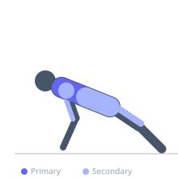
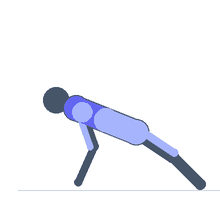

Exercise guide / Swiss Ball Knees-to-Chest Push-Up
Swiss Ball Knees-to-Chest Push-Up
A dynamic push-up variation where the feet rest on a swiss ball and each repetition is paired with a knee tuck that rolls the ball toward the chest. The push-up phase loads the pectoralis major and triceps while the knee tuck activates the hip flexors and rectus abdominis in a compound, full-body movement. The alternating push-and-tuck pattern creates a unique time-under-tension pattern and high core demand.
Primary muscles
pectoralis major sternal
pectoralis major clavicular
Secondary muscles
triceps lateral head
deltoid anterior
iliacus
psoas major
rectus abdominis
Stabilizers
transverse abdominis
infraspinatus
Equipment
Swiss Ball (Stability Ball / Exercise Ball)


Starting position
- Begin in a push-up plank with shins/feet resting on top of a swiss ball, hands on the floor. Body forms a straight line.
Setup
- Fully inflate the ball. Place the ball directly behind and position shins on top. Ensure non-slip floor surface. The ball should be directly under the lower legs at the start.
Steps
- Step 1: Establish the plank position with shins on the ball, hands shoulder-width on floor.
- Step 2: Perform a push-up: lower the chest toward the floor.
- Step 3: As you press back up, simultaneously tuck the knees toward the chest by rolling the ball forward.
- Step 4: At the top of the push-up, knees are tucked and ball is near the hands.
- Step 5: Extend the legs back out, rolling the ball to the start. That is one rep.
Coaching cues
- Press and tuck at the same time — they happen together
- Roll the ball with control — the hip flexors drive the tuck, the chest drives the press
Breathing
- Inhale on the descent, exhale as you press and tuck simultaneously.
Range of motion
- Full push-up depth and full knee tuck — knees near the chest at the top of the press.
Tempo
- 2-0-2-1 (2s down, coordinated press and tuck, 1s reset)
Common mistakes
- Tucking the knees before completing the push-up — the two movements should be coordinated
- Ball rolling sideways due to uneven pressure from the feet
- Hips rising too high during the tuck, reducing the push-up challenge
Safety
- Master swiss ball plank and standard swiss ball push-ups before adding the tuck
- Start with partial knee tucks until coordination is established
- Ensure ball is fully inflated and on a non-slip surface
Training
- hypertrophy: 6–12 reps
- endurance: 10–15 reps
- hypertrophy: 3–4 sets
- Rest: {'hypertrophy': 90}